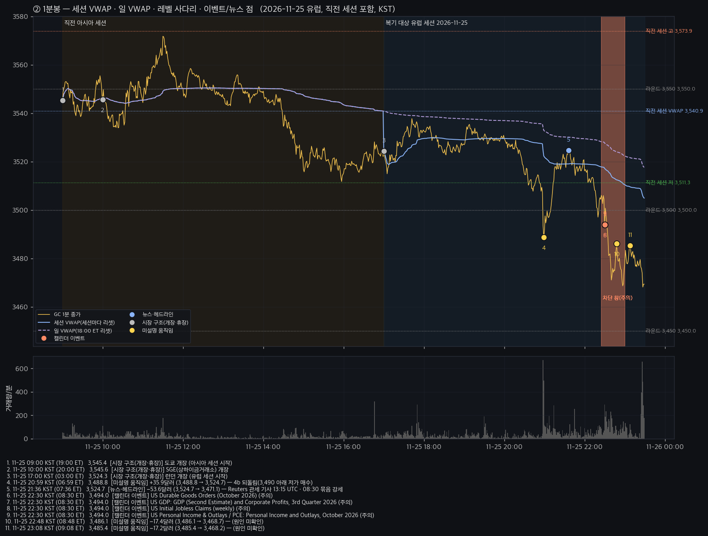
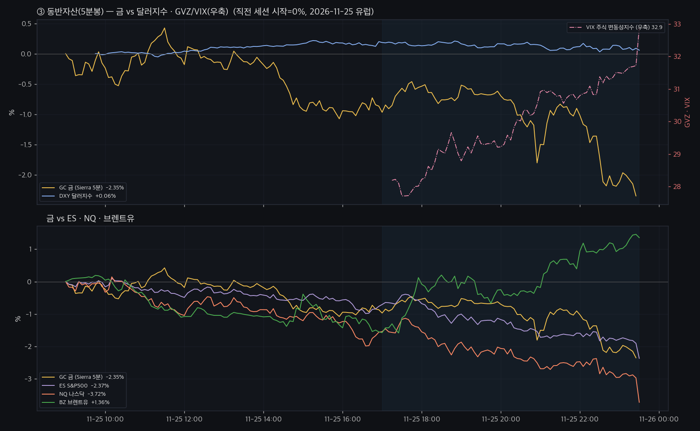
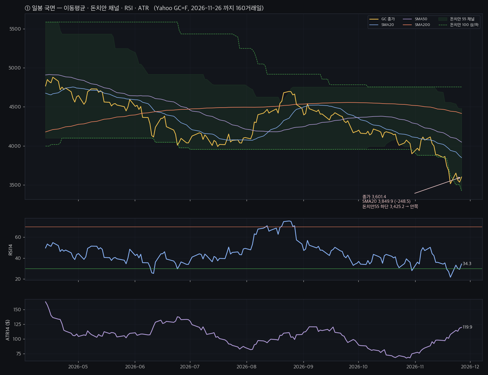

2026-11-25 유럽 세션 복기 (03:00~09:29 ET / 17:00~23:29 KST)
작성 11-26 KST(소급) · (지연 — cron 로그인 실패 11-23 21:48~11-26 15:30, 11-26 소급) · 틱 GC_2026-11-25.europe.ok window_utc 11-25 08:00~14:30 · bars_in_window 384 · empty_minutes 6 · longest_gap_min 6 · written_kst 11-25 23:35:07 · 종목 GCZ26. 이 세션의 예측 노트는 없음 — 11-25 15:45 유럽 예측 cron 이 Claude 로그인 없음으로 실패. 점수 na, 실측·타임라인·원인만 기록. 꼬리 보충 ⓪ 은 같은 날 앞 세션 노트(2026-11-25_아시아)가 이미 전 구간이라 할 일 없음.
■ 그림 — 세션 지도

■ 점수 na (예측 없음) — 실측만
| 항목 | 예측 | 실측 (틱 390봉, 08:00~14:29 UTC) | 판정 |
|---|
| 고저폭 | (없음) | 76.1달러 = 2.16% (고 3,538.7 @17:42 KST → 저 3,462.6 @23:28 KST) | na |
| 가격대 | (없음) | 시가 3,522.4 대비 +16.3 / −59.8달러 | na |
| 방향 | (없음) | 하락 — 종가 3,469.4, 종가−시가 −53.0달러 (−1.50%) | na |
| 이벤트 | (없음) | 08:30 ET 묶음(PCE·GDP·클레임·내구재, 주의) 5분 \|이동\| 19.2달러 · 15분 36.8 · 5분 순변화 −12.7달러 | na |
| 킬스위치 | (없음) | 5분 고저 ≥16.8(세션 5분 중앙 5.6의 3배) 또는 거래량 ≥930(5배) — 5회: 06:55·07:10·08:30·08:35·09:25 ET | — |
실측 출처 · 구간 · 거래량 비교
- 구간(고저 · 종−시, 달러): 17:00~ 24.2 · +10.7 / 18:00~20:00 14.2 · −2.2 / 20:00~22:00 47.5 · −9.6 / 22:00~ 59.6 · −51.2. 1분 고저 중앙 2.2 / p90(과거 90% 가 이 이하) 4.6달러, 5분 중앙 5.6달러·186계약.
- 거래량: GCZ26 20,406계약 — 11-24 유럽의 0.48배. 롤(roll, 근월물→다음 월물 이월) 중(11-25 GCG27 181,234 > GCZ26 57,903, datacollect) · 추수감사절 전일 → 배수 과소평가.
■ 핵심 메시지
1. 하락 −53.0달러 중 −51.2달러가 22:00 KST(08:00 ET) 뒤 — 08:30 ET 지표 묶음이 금리 인상 쪽으로 읽히며 3,500 이탈, 이후 되돌림 없이 저가 마감
- 실제/컨센: 코어 PCE(Personal Consumption Expenditures, 개인소비지출 물가) m/m 0.3/0.3 · y/y 3.3/3.2 · 3분기 GDP(국내총생산) 2차 4.3/3.5% · 신규 실업수당 청구 189K/200K · 내구재 0.2/1.1%(HAAWKS). 내구재만 약하고 나머지 셋이 '강한 경제·끈적한 물가' → 12월 인상 확률 굳힘(goldstocklive).
- 1분 −10.5 · 5분 −12.7 · 15분 −29.2달러(발표 1분 전 3,504.5 기준) — 이벤트 표.
- 금리는 금 쪽(10년 −1.8bp)·DXY(US Dollar Index, 달러 인덱스) −0.09% 인데 금↓ — 달러·금리 경로가 아니라 인상 기대 + 은·주식 동반 청산.
2. 06:58 ET 1분 −14.1달러(670계약, 세션 최대 1분) → 06:59 저 3,482.9 → 37분 +35.9 되돌림 — USTR 관세 발표 뒤 30~40분의 금속 단독 매도
- USTR(Office of the United States Trade Representative, 미 무역대표부) 14개국 관세 제안 약 06:19 ET 뒤 40분 −37달러(Ausecure, 해설). 같은 분 은 −0.7%, ES(E-mini S&P 500 futures, S&P500 미니 선물)·DXY ≈0 → 금속 수급(얇은 롤 호가).
- Reuters 기사 08:15 ET 분 08:12~08:20 ET −16.4달러도 겹침(원인 추적 #6).
3. 03:00~06:50 ET 는 3,507~3,539 박스(구간 고저 24.2·14.2달러) — 세션 고저는 마지막 2시간 30분
■ 움직임 타임라인 (틱, 전환 임계 11.2달러)
움직임 타임라인 — 7건(다리 포함), 미설명 4건 → 원인 추적
| # | 시작 KST (ET) | 지속 (분) | 움직임 (달러) | 가격 → 가격 | 거래량 배수 | 촉발 추정 1분 KST (ET, 계약) | 상태 |
|---|
| 4a | 19:08 (05:08) | 95 | −27.6 | 3,535.4 → 3,507.8 | 0.7배 | 19:30 (05:30, 190) | 추세형 완만 하락 |
| 4b | 20:50 (06:50) | 9 | −25.8 | 3,514.6 → 3,488.8 | 4.0배 | 20:58 (06:58, 670) | USTR 관세 발표 뒤 매도(부분 확인) |
| 5 | 20:59 (06:59) | 37 | +35.9 | 3,488.8 → 3,524.7 | 2.2배 | 20:59 (06:59, 498) | 4b 되돌림(3,490 아래 저가 매수) |
| 6 | 21:36 (07:36) | 64 | −53.6 | 3,524.7 → 3,471.1 | 2.0배 | 22:30 (08:30, 292) | 08:30 지표 묶음 + 08:15 Reuters 관세 기사 |
| 8 | 22:48 (08:48) | 9 | −17.4 | 3,486.1 → 3,468.7 | 2.0배 | 22:54 (08:54, 120) | (원인 미확인) |
| 10 | 23:08 (09:08) | 19 | −17.2 | 3,485.4 → 3,468.2 | 3.2배 | 23:26 (09:26, 656) | (원인 미확인) |
■ 원인 추적 — 미설명 4건 중 부분 확인 2건
원인 추적
| 행 | 촉발 ET | 확인한 것 | 동반 자산 같은 다리 (DXY % · 10년 bp · 은 % · ES % · 브렌트 %) | 분류 |
|---|
| 4b·5 | 06:58 / 06:59 | USTR 관세 제안 약 06:19 ET · Reuters Morning Bid 06:34 ET '관세 재인상'(Reuters/Herald) — 06:58 분 헤드라인은 (원인 미확인) | +0.01 · −0.5 · −1.22 · −0.10 · +0.05 / −0.06 · +0.9 · +1.79 · −0.03 · +0.76 | F(관세→위험회피 청산) + G(얇은 롤 호가) |
| 6 | 08:15 · 08:30 | Reuters 관세 기사 13:15 UTC · 08:30 묶음 강세 | −0.03 · −0.5 · −2.03 · −0.21 · +0.51 | C(인상 기대) + F |
| 8·10 | 08:54 / 09:26 | (원인 미확인) — 검색 예산 소진 | +0.06 · −0.7 · −1.02 · −0.11 · −0.28 / +0.00 · −1.1 · −0.60 · −0.14 · +0.38 | 은 동반 금속 청산(G) |
■ 동반 자산 · 경로 분해
세션 −54.9달러(08:00~14:30 UTC) — 달러 몫 +4달러(−8%), 금리 몫 반대 방향, 은·주식 동행이 전부
- 세션: DXY −0.09% · 10년 −1.8bp(금 쪽) · 은 −2.04% · ES −1.22% · 브렌트 +3.10%.
- 1분 r(동시 상관, −1~+1): 은 +0.70 · ES +0.47 · DXY −0.27. 선행 lag 전부 \|0.11\| 이하.
- β(달러 1% 하락당 금 변화, 7일) −1.44 → 달러 몫 ≈ +4달러, 미설명 ≈ −59달러(
gold_session_driver_decomp.py). GVZ 결측.

■ 이벤트 (08:30 ET 묶음, 주의) — phase2 실측
| 이벤트 | 실제 / 컨센 / 이전 | 가족 5분 중앙 / p90 (달러, 과거 n건) | 실측 mv1 · mv5 · net5 · mv15 · 진정 · 거래량 | 판정 |
|---|
| 코어 PCE m/m | 0.3 / 0.3 / 0.3% | 9.4 / 23.4 (14건) | 19.2 · 19.2 · −0.36% · 36.8 · (60분 안 진정 없음) · 0.87배 | p90 안, 중앙 2배 |
| GDP 2차 | 4.3 / 3.5% | 10.0 / 23.4 (14건) | 같음(동시) | p90 안 |
| 신규 청구 | 189K / 200K / 202K | 8.9 / 18.3 (56건) | 같음 | p90 초과(R2) |
| 내구재 | 0.2 / 1.1 / 2.0% | 8.4 / 18.9 (14건) | 같음 | p90 초과(R2) |
출처 gold_event_occurrence_append.py · 발생 카드 4개 · 프로필.
■ 교훈 → 학습원장
예측이 없어 적중/빗나감 판정 불가 — 원장 행 추가 없음
- 관찰: 08:30 묶음은 놀람 부호가 섞여도(내구재 하회 vs 나머지 강세) 인상 기대 쪽으로 단방향, 15분이 5분의 2.3배(지속형).
- 관찰: 관세 헤드라인 날 캘린더 밖 은 동반 1분 급락이 세션 최대 1분(06:58 −14.1, 11-24 유럽 08:09 와 같은 유형).
■ 일봉 국면 (그림)

■ 빗나간 이유 (원인 A~H)
| 빗나간 것 | 원인 | 한 줄 |
|---|
| (예측 없음) | — | 11-25 15:45 cron 로그인 실패(운영 사고, A~H 밖) |
복기 검색 (§4-4) — R1·R2·R6, 5쿼리 / 0페이지 (예산 ≤4, 1 초과)
| 트리거 | 판정 | 알게 된 것 / 적은 곳 |
|---|
| R1 | 발화 — 06:58 ET 1분 14.1달러 ≥ p90 4.6, 예정 이벤트 없음 | USTR 관세 뒤 매도(부분) → 01 §5 USTR 후보 3건째 |
| R2 | 발화 — 08:30 5분 19.2 > 클레임·내구재 p90 | 인상 기대 · 발생 카드 4개 |
| R5 | 판정 불가 — 예측 없음 | — |
| R6 | 기존 후보(USTR 관세)로 흡수 | — |
search_used R1:발화/부분;R2:발화/적중;R6:발화/0. 데이터 축적: *_surprise.csv 4가족 1줄씩(GDP·내구재 신규 생성). occurrence_append 새 행 6(08:30 ×4 · New Home Sales · GCX26 최종거래).
■ 개선 제안 (규칙표 수정 후보 — 월간 갱신 때 판단)
- 관세 발표(USTR·백악관) 가족 후보: 11-24 유럽 08:09 · 11-25 아시아 · 11-25 유럽 06:58 → 3/3 도달, 01 §5 가족 승격 검증(발표 분 시각 n≥8 → simulate) 제안.
- 08:30 묶음(PCE+GDP+클레임+내구재 4개 동시) 차단 창 끝 09:00 ET → 실측 진정 60분 안 없음, 15분 36.8달러 — 묶음일은 창 끝을 09:30 ET 로 늘리는 후보.
- 롤 주간 거래량 기준(11-25 아시아 §5 #1) — 유럽도 0.48배.
■ 미확인
못 확인한 것 4건 — 06:58 ET 헤드라인 · 08:54·09:26 촉발 · USTR 발표 분 시각 · GCG27 거래량
출처·파일
- 데이터:
GC_2026-11-25.csv(.europe.ok) · session_actuals.py · gold_session_moves.py · 점수.csv - 볼트: 2026-11-25_아시아 · 2026-11-25
- 웹: 본문 링크 · 전체 목록 2026-11-25 '## 복기 유럽'